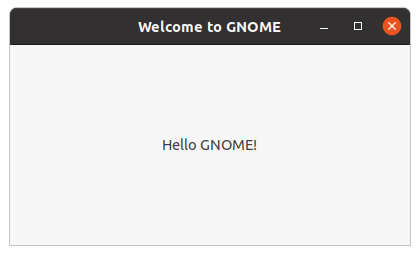

Tutorial
This page shows from the ground up how to create a Meson build definition for a simple project. Then we expand it to use external dependencies to show how easily they can be integrated into your project.
This tutorial has been written mostly for Linux usage. It assumes that you have GTK development libraries available on the system. On Debian-derived systems such as Ubuntu they can be installed with the following command:
sudo apt install libgtk-3-dev
It is possible to build the GUI application on other platforms, such as Windows and macOS, but you need to install the needed dependencies.
The humble beginning
Let's start with the most basic of programs, the classic hello
example. First we create a file main.c which holds the source. It
looks like this.
#include<stdio.h>
int main(int argc, char **argv) {
printf("Hello there.\n");
return 0;
}
Then we create a Meson build description and put it in a file called
meson.build in the same directory. Its contents are the following.
project('tutorial', 'c')
executable('demo', 'main.c')
That is all. We are now ready to build our application. First we need to initialize the build by going into the source directory and issuing the following commands.
$ meson builddir
We create a separate build directory to hold all of the compiler output. Meson is different from some other build systems in that it does not permit in-source builds. You must always create a separate build directory. Common convention is to put the default build directory in a subdirectory of your top level source directory.
When Meson is run it prints the following output.
The Meson build system
version: 0.13.0-research
Source dir: /home/jpakkane/mesontutorial
Build dir: /home/jpakkane/mesontutorial/builddir
Build type: native build
Project name is "tutorial".
Using native c compiler "ccache cc". (gcc 4.8.2)
Creating build target "demo" with 1 files.
Now we are ready to build our code.
$ cd builddir
$ meson compile
Once that is done we can run the resulting binary.
$ ./demo
This produces the expected output.
Hello there.
Adding dependencies
Just printing text is a bit old fashioned. Let's update our program to create a graphical window instead. We'll use the GTK+ widget toolkit. First we edit the main file to use GTK+. The new version looks like this.
#include<gtk/gtk.h>
int main(int argc, char **argv) {
GtkWidget *win;
gtk_init(&argc, &argv);
win = gtk_window_new(GTK_WINDOW_TOPLEVEL);
gtk_window_set_title(GTK_WINDOW(win), "Hello there");
g_signal_connect(win, "destroy", G_CALLBACK(gtk_main_quit), NULL);
gtk_widget_show(win);
gtk_main();
}
Then we edit the Meson file, instructing it to find and use the GTK+ libraries.
project('tutorial', 'c')
gtkdep = dependency('gtk+-3.0')
executable('demo', 'main.c', dependencies : gtkdep)
Now we are ready to build. The thing to notice is that we do not need to recreate our build directory, run any sort of magical commands or the like. Instead we just type the exact same command as if we were rebuilding our code without any build system changes.
$ meson compile
Once you have set up your build directory the first time, you don't
ever need to run the meson command again. You always just run
meson compile. Meson will automatically detect when you have done changes to
build definitions and will take care of everything so users don't have
to care. In this case the following output is produced.
[1/1] Regenerating build files
The Meson build system
version: 0.13.0-research
Source dir: /home/jpakkane/mesontutorial
Build dir: /home/jpakkane/mesontutorial/builddir
Build type: native build
Project name is "tutorial".
Using native c compiler "ccache cc". (gcc 4.8.2)
Found pkg-config version 0.26.
Dependency gtk+-3.0 found: YES
Creating build target "demo" with 1 files.
[1/2] Compiling c object demo.dir/main.c.o
[2/2] Linking target demo
Note how Meson noticed that the build definition has changed and reran itself automatically. The program is now ready to be run:
$ ./demo
This creates the following GUI application.

The results of the search are